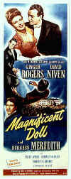

|
Acting Presidential
By Stu Kobak
|
|
|
|
|
Vote Row A
|
Vote Row B
|
Vote Row C
|
|
|
|
|
| Vote Row D |
Vote Row E |
Vote Row F
|
As we count
the days to another presidential election, one can't help pondering the image of the man in The
White House. Will Gore or Bush fill the shoes of what we expect a president to be like? The
image may be ever malleable, changing with each new man or woman that takes on the title. When
Teddy Roosevelt was president, would a man in the mold of John F. Kennedy have fit the bill? Jimmy
Carter and Bill Clinton have forever changed the collective image of presidential material and
Gerald Ford added a unique image of his own to the amalgam that we find familiar as president.
Nixon's perspiration and Eisenhower's firm fatherly countenance have all impacted on the way we see
the man in the Oval Office. But the image of the president has been shaped by more than just those
men who have sat in the hot seat of The White House. Other men took their turn acting presidential
in a score of Hollywood movies, and they have shaped our image of presidential material almost
every bit as much as our elected chief executives.
Ironically, Ronald Reagan, the 40th president of the United States, never
acted presidential in a screen career that covered more than 60 films and 27 years. Many think
Reagan's acting career was merely a rehearsal for politics. Reagan played politics Hollywood style
as president of the Screen Actors Guild and given Reagan's moderate acting success, running for the
Oval Office was a smart career move. Reagan may have occasionally pulled the wool over the public
eye, but he really tripped up Hollywood casting wisdom, since no casting director or filmmaker ever
had the foresight to consider him presidential. Maybe they knew something the general public did
not.
Who would you vote for from amongst the many fine actors who
took on the screen persona of the president of the United States? Perhaps the most memorable screen
portrait of Abraham Lincoln is Henry Fonda in John Ford's Young Mr. Lincoln. Fonda could mix
great screen sincerity with an innocent unassuming posture just as easily as he could turn arrogant
and cold. Fonda was outstanding as a dove-like presidential candidate William Russell in
director Franklin J. Schaffner's political campaign film The Best Man. . Fonda was a steady
force under pressure as the president in Sidney Lumet's clean cold war thriller Fail Safe.
Pretty good presidential acting credentials you have to admit.
 |
|
Click image to enlarge |
Burt Lancaster,
one of my favorite actors, never got to play the president on screen. The closest he came was as
General James Mattoon Scott, the loose canon head of the Joint Chiefs of Staff, who makes at run at
the presidency, but decides its best not to leave the election up to the people. I can understand
why Burt never made it to the White House. His bigger than life persona was far too grand and not
very presidential. After all, this is the guy used words as daggers in Sweet Smell of Success
and helmed a pirate ship in The Crimson Pirate. Burt has displayed the oratory powers needed
to get elected in some campaigns. He mesmerized the faith healing circuit with an Academy Award
performance in Elmer Gantry, but his true colors were exposed and they were not red, white
and blue.
Gregory
Peck is another case entirely. Peck brings impeccable dignity to virtually every role he plays.
Just shut your eyes and think about listening to Peck's smooth film voice delivering a speech of
import to the nation. This guy could do almost anything in The White House and make you believe it
was the only honorable path. His presidential screen experience may not be comprised of major
roles, but he displays such sagacity in roles like Atticus Finch in To Kill a Mockingbird
he piles up remarkable presidential points. Peck has done Lincoln in the TV mini series North
and South, and played the president in Amazing Chuck and Grace. He has played
"presidential material" on a number of occasions, including his golden boy Ambassador to
Great Britain in The Omen
and as General Douglas MacArthur in the biopic MacArthur.
Does spokesman for The National Rifle Association add to
presidential screen qualifications? How about playing Moses? Charlton Heston played Andrew Jackson
twice. Heston lit Susan Hayward's
clay pipe numerous times, though they never got to chase each other around The White House in The
President's Lady, the story of Rachel and Andy Jackson out West. He was in the purely bigger
than life mode as old Andy in The Buccaneer, a DeMille epic depicting the battle of New
Orleans. I have no doubt that Heston can deliver a speech with the best of them, but if there is
one quality that stands in the way of presidential posturing it's arrogance. Even at his best and
most likeable, the arrogance shows through. It took Yul Brynner to make you forget the
arrogance when Heston played Moses. In Ben Hur, William Wyler stretched the wide screen to
its very limits and surrounded Heston with enormous space to temper the actor's native superior
nature. Screen arrogance is Heston's presidential Achilles heel.
One of the most realistic presidential screen portraits is painted by Fredric
March. In Seven Days in May he is called upon to prevent a military coup. You can feel the
intensified heartbeat, the sweat forming under his armpits, as March makes tough decisions. His
character is flesh and blood, sitting on the precipice of a national disaster, but rising to the
task of screen president. March could have easily put across a sincere campaign speech. Put him in
front of the camera, a look of gravity plastered on a calm and sage face, March would pile up the
popular vote.
 |
| Click image to enlarge |
Spencer Tracy plays presidential candidate Grant
Matthews in the wonderful comic titillation State of the Union, with Katharine Hepburn on
hand to keep him honest and agitated. Tracy has prime presidential fiber, but though played
politician several times, running for president is as close as he ever got to the office. Maybe it
was his off-screen romance with Katharine Hepburn that kept the moral majority of Hollywood from
offering him the chance to act presidential. Tracy makes a great white father, sage and
authoritative. despite any off screen infidelities .My God, Tracy even made adultery acceptable.
You can have total confidence in the man's integrity. Now, Katharine Hepburn was a woman whose
screen presence could be considered presidential. Kate commanded respect. Even at her daffiest,
there is an underlying intelligence that calls for admiration. The only woman afforded on screen
presidential treatment had to be in a comedy. Polly Bergen got to hike up her presidential mettle
with Fred MacMurray as first man in Kisses for my President. Polly could hardly get elected
for future acting roles much less consideration as presidential material.
Presidents under the threat of nuclear devastation make great acting fodder. Yet
another Brit, Peter Sellers, got to play president in Stanley Kubrick's Dr. Strangelove. Sellers makes
President Merkin Muffley a meek and mannered leader of the free world. The subtle comic treatment
of a dove-like president manning the war room with pressure from the likes of General Buck
Turgidson and General Jack T. Ripper is marvelous spoofing. Sellers gets it all right. The speech
patterns, the facial expressions, the mannerisms; it all adds up to a firm endorsement against
future presidential roles, unless they are meant to stand the institution on its ear.
Not many African-American actors have had the chance to act presidential on
screen. James Earl Jones comes to mind in The Man, a 1972 made for TV drama based on an
Irving Wallace novel. Jones has the voice to assume the most powerful political office int he
world. Still, he is the voice of Darth Vader in Star Wars. Can you trust him as president
after he succumbed to the dark side of The Force. Of all the African-American actors working,
Denzel Washington should get a chance at acting presidential. Washington is the real goods. Voice,
demeanor, good looks; I'll put my money on Denzel in any presidential debate.
Recent efforts at acting presidential in movies include Anthony Hopkins as
Nixon, Michael Douglas in The American President, Kevin Kline in Dave,
Bill Pullman in Independence Day, Gary Sinese in Truman, James Garner and
Jack Lemmon in My Fellow Americans,
Jack Nicholson in Mars Attacks!,
Harrison Ford in Air Force One,
Nick Nolte in Jefferson in Paris, Gene Hackman in Absolute Power and John Travolta in
Primary Colors.
Quick disqualification from future presidential consideration marks some easy
targets. Bill Pullman is a dubious addition to Hollywood's presidential archives. Sorry Bill, but
you simply didn't pull it off as Commander in Chief. I like you better in something like The
Last Seduction. Now, don't get me wrong, I do love Gene Hackman's sneer. It's one of the best
sneers on screen ever, but sneers and the president don't quite go together. Hackman may be one the
best actors working, but his body of acting work has seldom been presidential in nature and leads
me to believe Gene should stick to doing what he does best, showing off a bracing cynicism that
never fails to add up to screen entertainment. Jack. Jack! Okay, it's Tim Burton's vision of
the president and maybe you can fit into that mold, but you've spent too many hours sitting on the
sidelines of Lakers games to be seriously considered for presidential fabric. And never mind losing
it in The Shining. No, Jack will never do. Gary Sinese was perfect as Truman, best
the best he could provide was bureaucratic doggedness, not enough for placement in the presidential
screen pantheon. Can you imagine carrying around all the angst that bows Nick Nolte's shoulders and
playing presidential too. Nick, another of my favorite contemporaries, couldn't cut the
presidential mustard. My guess is he'll never get another chance at the top elected screen job.
Kevin Kline is just too funny to warrant serious consideration as the chief executive. Kevin is
better at eating live tropical fish than sweating under the gun of nuclear disaster. Jack Lemmon,
while a fine actor, possesses a vulnerability that shouldn't inhabit The White House except under
comic circumstances. There is something indelibly callow about Lemmon. It's a wonderful quality,
but not presidential. Maybe he'd make a better Vice President. While Michael Douglas made a
convincing screen president, the shadow of Gordon Gekko will forever haunt him. I mean, can you
trust this man in The White House. Perhaps that is not the ultimate consideration, however.
Though Douglas is a fine actor, even in his serious roles I tend to take him less than seriously.
Maybe it's the shadow of his father Kirk, who never even got a shot at playing presidential. Maybe Spartacus was good enough for
Kirk.
Maybe the best recent performance by anyone doing his presidential best was John
Travolta doing the dandiest imitation of Bill Clinton in the thinly disguised presidential campaign
movie Primary Colors.
Travolta is nothing short of uncanny, and just think, if you need some quick action, this guy is
ready to rumble. Today's Travolta makes Saturday Night Fever a distant memory. James Garner
is an interesting choice for presidential material. Garner's trademark cynicism may prevent him
from taking politics seriously, though. Garner does possess commanding presence and can look
directly into the screen with fine political effect. Brit Anthony Hopkins had the unenviable task
of recreating a recent president whose image was firmly etched in the mind's of the movie going
public. The minor effort to make up Hopkins to look more like Nixon is a weight hanging on the
actor's jowls. Given what we already know about Richard Nixon, Hopkins gets few future presidential
points for this screen portrait. The odious nature of Nixon taints the role. Interestingly enough,
even though Hopkins loses presidential ground, Nixon is a flawed but brilliant movie.
Harrison Ford plays the president of the United States in the only logical way possible, as an
action hero. Air Force One merely extends Ford's already monumental credentials as an action
star, but is the Ford of Indiana Jones and Star Wars the Ford of The White House. I like
Ford very much. But I do not see him leading the country.
The biopic stands alone in presidential depictions. Wilson comes
right to the point. It's about Woodrow Wilson, the president who brought the country through the
World War I. Alexander Knox as President Woodrow Wilson is considered one of the great presidential
screen roles. Maybe Canadian Knox did a grand interpretation in Wilson, but I would have had
trouble casting my vote for Wilson if the acting was accurate. Raymond Massey's portrayal of Abe
Lincoln in Illinois was most memorable, and Massey did a second turn as Lincoln many years
later in the epic western How The West Was Won. For me, Massey's screen stature often
overshadowed every image of Lincoln I had other than the president's imprint on the five dollar
bill. Massey, like Alexander Knox, was born in Canada. Walter Huston, also Canadian born,
played the title character in the 1930 biopic Abraham Lincoln. Huston played presidential
again in the 1933 Gabriel over the White House as the newly elected president. Still,
I prefer my Huston distilled in The Treasure of Sierra Madre wearing a rumpled dirt
stained clothing of a prospector instead of the tall formal hat and suits associated with the
presidency. Ralph Bellamy, a solid citizen if there ever was one, plays Franklin Delano Roosevelt
to a "T" in Sunrise at Campobello. Bellamy's mellifluous voice, always a screen
asset, pays dividends in a presidential role. In PT-109, Cliff Robertson plays a young John
F. Kennedy long before became president. It's a solid portrayal, but adds little to the body of
presidential material owing to its action movie roots.
Presidential screen portrayals are often assayed as supporting roles with
character actors taking up the office. Sidney Blackmer was the movie Teddy Roosevelt six times.
That has to be some kind of record, but for modern audiences, Blackmer will always be
remembered as the gentle soul living down the hall from Rosemary, Roman Castavet in Rosemary's
Baby, and his devilish associations forever disqualify him from acting presidential. Besides,
he is deceased. British born Donald Moffat, one of today's busiest character actors, has played at
President twice. In Clear
and Present Danger Moffat conveys the image of everything we've feared most about the man
in The White House, pure distilled corruption. Not exactly an endorsement for election, but it is
certainly one valid view of the machinations of the oval office. Being Canadian, Moffat, naturally
enough, has played presidential more than once. Several years prior to "Danger" he
was President Lyndon B. Johnson in The
Right Stuff, a minor role that did little to add to the collective image of acting
presidential. One of the most energetic presidential portraits to my screen memory was Brian Keith
as a bellowing, bully, Teddy Roosevelt in The Wind and the Lion. Keith throws more bravura
per minute into acting presidential than most men has put into their White House efforts. Keith's
bellows, however, were subservient to Sean Connery's sheik desert wooing of Candace Bergen. Lewis
Stone, the white haired father figure who played Judge Hardy to Mickey Rooney's Andy in the kid
series, got a chance to assay presidential dignity in a comic effort called Joe and Ethel
Turp Call on the President. Great title, doncha think! Burgess Meredith played president James
Madison in  The Magnificent Doll,
but all the attention was centered around Ginger Rogers as first lady Dolly, who was oh so brave in
the face of British invasion. Lincoln has frequently played a pivotal film role. Familiar
character actors have taken on the role such as John Carradine or Character actors often reprised
their roles as Lincoln such as Frank McGlynn Sr. in The Prisoner of Shark Island and The
Plainsman, both 1936. and then a third time in the 1937 Wells Fargo. Does dating a
transvestite reduce a potential presidential election portfolio? Charles Durning was the president
under Burt Lancaster's gun in Twilight's Last Gleaming, but would you vote for the man who
wouldn't take no for an answer to Dustin Hoffman in Tootsie? Any man who can't tell a man
from a woman, even when a man is imitating a woman, can't be considered presidential material. Now
there's some movie material to ponder, the compromising of The White House by a transvestite double
agent. I wonder which president might be most susceptible to the bait?
Lots of choices to look at for the best of presidential screen fabric, but on
the basis of celluloid evidence, I have to give my vote to Gregory Peck as the man most
likely to make the best screen president. Peck parlays authority with kindness, intelligence with
integrity, and a general affability that never suggest weakness. into an presidential screen
presence beyond any other actor. So, if you drop by the polls at Films on Disc, vote row A. You
won't be sorry. |
|

Selections from the feature archive include articles on Akira Kurosawa, Frank
Darabont, Blonde Bimbos, Hollywood Street Gangs, or Vietnam: The
Hollywood Pariah, and many more....
.jpg)
Screen Voices and style of delivery often stamp an actor's screen
image indelibly. Click the lips to read more.

Film noir: The phrase hangs awkwardly on the tongue,
shadowy images peek out from behind half-closed doors. Click on the Noir and Noir Again
symbol for a look into the dark spaces of Hollywood's revisiting of film noir.
Redeeming
the Writer:
A Conversation with Frank Darabont

The
Movie Poster Archive includes extensive poster images from the films of stars like Susan Hayward,
Kirk Douglas, Katharine Hepburn and many more. Our featured star is Gregory
Peck

 Gary Morris's insightful publication Bright Lights
Film Journal turns the celluloid in films from a unique perspective. Click on the image above
for more pure movie views. Gary Morris's insightful publication Bright Lights
Film Journal turns the celluloid in films from a unique perspective. Click on the image above
for more pure movie views.
 Brad Lang continues to add more interesting material to the extensive
collection at Classic
Movies. Everything from actors and actress to your favorite directors is
linked at the site. Brad Lang continues to add more interesting material to the extensive
collection at Classic
Movies. Everything from actors and actress to your favorite directors is
linked at the site.
 
The Big Combo has
style to spare in reviewing films and producing feature articles. Check out their special
"Lingo" section.

Excellent resource for movie review links, with many early looks.

The National Film Preservation Foundation (NFPF) is the nonprofit organization created by the U.S. Congress to save
America's film heritage.

News, information, features about current films in theaters and in the
pipeline. Easy to use interface.

The official site for information about the great comic director. A treat for connoisseurs of
classic Hollywood madcap.

Now a major independent DVD distributor, Image has parlayed its laser disc business
to success. Great DVD release calendar info.

First Run Features boasts a library of independent and foreign features available on DVD
and VHS. Check out their web site for catalog details.
 ETEKNet is the web's only 24-hour, totally FREE source for all your home theater,
DVD, Dreamcast, PC, and Networking tech support needs! ETEKNet is the web's only 24-hour, totally FREE source for all your home theater,
DVD, Dreamcast, PC, and Networking tech support needs!

DVD links, information about Web specials, news, Site reviews.

A great place for movie lovers and techies to visit for exchange of
ideas. New speedy interface is an inspiration for more dialogue.

Home to The American Society of Cinematographers. Includes features from
American Cinematographer Magazine and more...

Need a daily fix of movie
quotes. Reel Quotes Newsletter has the answer. Click on the Reel Quotes symbol for more.

Check out these selections from our DVD Review
Archive. New releases are constantly in our face, but catalog gems should not be forgotten.

|